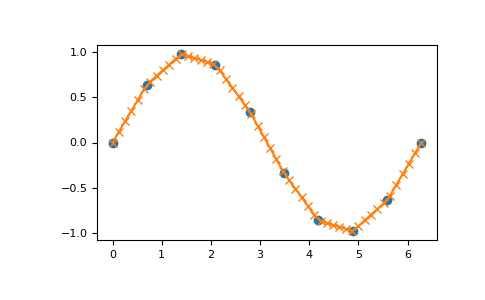

numpy.interp¶
-
numpy.interp(x, xp, fp, left=None, right=None, period=None)[source]¶ One-dimensional linear interpolation.
Returns the one-dimensional piecewise linear interpolant to a function with given discrete data points (xp, fp), evaluated at x.
- Parameters
- xarray_like
The x-coordinates at which to evaluate the interpolated values.
- xp1-D sequence of floats
The x-coordinates of the data points, must be increasing if argument period is not specified. Otherwise, xp is internally sorted after normalizing the periodic boundaries with
xp = xp % period.- fp1-D sequence of float or complex
The y-coordinates of the data points, same length as xp.
- leftoptional float or complex corresponding to fp
Value to return for x < xp[0], default is fp[0].
- rightoptional float or complex corresponding to fp
Value to return for x > xp[-1], default is fp[-1].
- periodNone or float, optional
A period for the x-coordinates. This parameter allows the proper interpolation of angular x-coordinates. Parameters left and right are ignored if period is specified.
New in version 1.10.0.
- Returns
- yfloat or complex (corresponding to fp) or ndarray
The interpolated values, same shape as x.
- Raises
- ValueError
If xp and fp have different length If xp or fp are not 1-D sequences If period == 0
Notes
Does not check that the x-coordinate sequence xp is increasing. If xp is not increasing, the results are nonsense. A simple check for increasing is:
np.all(np.diff(xp) > 0)
Examples
>>> xp = [1, 2, 3] >>> fp = [3, 2, 0] >>> np.interp(2.5, xp, fp) 1.0 >>> np.interp([0, 1, 1.5, 2.72, 3.14], xp, fp) array([ 3. , 3. , 2.5 , 0.56, 0. ]) >>> UNDEF = -99.0 >>> np.interp(3.14, xp, fp, right=UNDEF) -99.0
Plot an interpolant to the sine function:
>>> x = np.linspace(0, 2*np.pi, 10) >>> y = np.sin(x) >>> xvals = np.linspace(0, 2*np.pi, 50) >>> yinterp = np.interp(xvals, x, y) >>> import matplotlib.pyplot as plt >>> plt.plot(x, y, 'o') [<matplotlib.lines.Line2D object at 0x...>] >>> plt.plot(xvals, yinterp, '-x') [<matplotlib.lines.Line2D object at 0x...>] >>> plt.show()
Interpolation with periodic x-coordinates:
>>> x = [-180, -170, -185, 185, -10, -5, 0, 365] >>> xp = [190, -190, 350, -350] >>> fp = [5, 10, 3, 4] >>> np.interp(x, xp, fp, period=360) array([7.5, 5., 8.75, 6.25, 3., 3.25, 3.5, 3.75])
Complex interpolation:
>>> x = [1.5, 4.0] >>> xp = [2,3,5] >>> fp = [1.0j, 0, 2+3j] >>> np.interp(x, xp, fp) array([ 0.+1.j , 1.+1.5j])